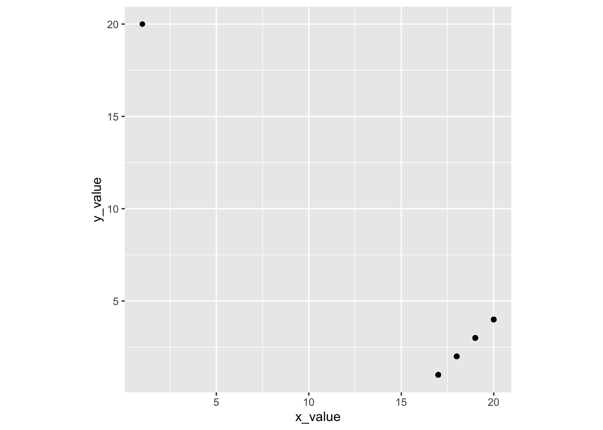

Clicker Q
to go with Introduction to Modern Statistics by Çentinkaya-Rundel & Hardin. Math 58B - Introduction to Biostatistics.
- If 16 infants with no genuine preference choose 16 toys, what is the most likely number of “helping” toys that will be chosen?1
- 4
- 7
- 8
- 9
- 10
- How likely is it that exactly 8 helpers will be chosen (if there is no preference)?2
- 0-15%
- 16-30%
- 31-49%
- 50%
- 51-100%
- What if we flipped a coin 160 times? What percent of the time will the simulation flip exactly 80 heads?3
- 0-15%
- 16-30%
- 31-49%
- 50%
- 51-100%
- Is our actual result of 14 (under the coin model)…4
- very surprising?
- somewhat surprising?
- not very surprising?
- Based on the first handwriting study, can we conclude that cursive causes higher scores (on average)?5
- Yes
- No
- It depends
- Based on the second handwriting study, can we conclude that cursive causes higher scores (on average)?6
- Yes
- No
- It depends
- A possible confounding variable for the handwriting study is:7
- grade of the student (age)
- region of country where the SAT was taken
- academic ability of the student
- gender identity of the student
- number of siblings of the student.
- The main reason we randomly assign the explanatory variable is:8
- To get the smallest p-value possible
- To balance the expected causal mechanism across the two groups
- To balance every possible variable except the causal mechanism across the two groups
- So that our sample is representative of the population
- So that the sampling process is unbiased
- The main reason we take random samples from the population is:9
- To get the smallest p-value possible
- To balance the expected causal mechanism across the two groups
- To balance every possible variable except the expected causal mechanism across the two groups
- So that our sample is representative of the population
- So that the sampling process is unbiased
- Are there effects of second-hand smoke on the health of children?10
- definitely obs study
- definitely experiment
- unhappily obs study
- unhappily experiment
- Do people tend to spend more money in stores located next to food outlets with pleasing smells?11
- definitely obs study
- definitely experiment
- unhappily obs study
- unhappily experiment
- Does cell phone use increase the rate of automobile accidents?12
- definitely obs study
- definitely experiment
- unhappily obs study
- unhappily experiment
- Do people consume different amounts of ice cream depending on the size of bowl used?13
- definitely obs study
- definitely experiment
- unhappily obs study
- unhappily experiment
- Which is more effective: diet A or diet B?14
- definitely obs study
- definitely experiment
- unhappily obs study
- unhappily experiment
- Suppose that we record the midterm exam score and the final exam score for every student in a class. What would the value of the correlation coefficient be if every student in the class scored ten points higher on the final than on the midterm:15
- r = -1
- -1 < r < 0
- r = 0
- 0 < r < 1
- r = 1
- Suppose that we record the midterm exam score and the final exam score for every student in a class. What would the value of the correlation coefficient be if every student in the class scored five points lower on the final than on the midterm:16
- r = -1
- -1 < r < 0
- r = 0
- 0 < r < 1
- r = 1
- Suppose that we record the midterm exam score and the final exam score for every student in a class. What would the value of the correlation coefficient be if every student in the class scored twice as many points on the final than on the midterm:17
- r = -1
- -1 < r < 0
- r = 0
- 0 < r < 1
- r = 1
- Suppose you guessed every value correctly (guess the correlation applet), what would be the value of the correlation coefficient between your guesses and the actual correlations?18
- r = -1
- -1 < r < 0
- r = 0
- 0 < r < 1
- r = 1
- Suppose each of your guesses was too high by 0.2 from the actual value of the correlation coefficient, what would be the value of the correlation coefficient between your guesses and the actual correlations?19
- r = -1
- -1 < r < 0
- r = 0
- 0 < r < 1
- r = 1
- A correlation coefficient equal to 1 indicates that you are a good guesser.20
- TRUE
- FALSE
- Perfect Correlation… if not for a single outlier
n = 101 observations: 1 observation in top left, 25 observations in each in of the points near the bottom right.
The value of the correlation, r, is:21- -1 < r < -0.9
- -0.9 < r < -0.5
- -0.5 < r < 0.5
- 0.5 < r < 0.9
- 0.9 < r < 1
- The sum of residuals from the sample mean (no X):22 \[\sum_{i=1}^n(Y_i - \overline{Y})\]
- is positive
- is negative
- is zero
- is different for every dataset
- A good measure of how well the prediction (of the sample mean) fits the data is:23
- \(\sum_{i=1}^n(Y_i - \overline{Y})\)
- \(\sum_{i=1}^n(Y_i - \overline{Y})^2\)
- \(\sum_{i=1}^n|Y_i - \overline{Y}|\)
- \(\mbox{median}(Y_i - \overline{Y})\)
- \(\mbox{median}|Y_i - \overline{Y}|\)
- A good measure of how well the prediction (of the regression line) fits the data is:24
- \(\sum_{i=1}^n(Y_i - \hat{Y}_i)\)
- \(\sum_{i=1}^n(Y_i - \hat{Y}_i)^2\)
- \(\sum_{i=1}^n|Y_i - \hat{Y}_i|\)
- \(\mbox{median}(Y_i -\hat{Y}_i)\)
- \(\mbox{median}|Y_i -\hat{Y}_i|\)
- What math is used to find the value of \(m\) that minimizes:25 \[\sum_{i=1}^n(Y_i - m)^2\]
- combinatorics
- derivative
- integral
- linear algebra
- \(\sum_i(Y_i - \overline{Y})^2\) is sometimes \(\geq \sum_i(Y_i - \hat{Y}_i)^2\)26
- TRUE
- FALSE, \(\sum_i(Y_i - \overline{Y})^2\) is always \(\geq \sum_i(Y_i - \hat{Y}_i)^2\)
- FALSE, \(\sum_i(Y_i - \overline{Y})^2\) is never \(\geq \sum_i(Y_i - \hat{Y}_i)^2\)
- When writing the regression equation, why is there a hat ( ^) on the response variable?27
- because the prediction is an estimate
- because the prediction is an average
- because the prediction may be due to extrapolation
- a & b
- all of the above
- “Observed data or more extreme” is:28
- fewer than 9
- 9 or fewer
- 9 or more
- more than 9
- What is the mean value of the null sampling distribution for the number of Botox therapy who showed pain reduction?29
- 0
- 9
- 5.3
- 11
- 15
- In the Botox and Pain Relief example, the p-value is calculated. What does “probability” refer to?30
- random allocation
- random sample
p-value = probability of the observed data or more extreme given the null hypothesis is true.
- What conclusion would you draw from the Back Pain and Botox study?31
- Not enough evidence to conclude that Botox is more effective than the placebo.
- Strong evidence that Botox is equally as effective as the placebo.
- Strong evidence that Botox is more effective than the placebo.
- If we consider those in the study with back pain to be representative of all people with back pain, what would you conclude about the percentage of people who will have reduced back pain if they use Botox?32
- Substantially greater than 50%
- Substantially less than 50%
- Very close to 50%
- Material check-in
- So far, so good
- Concepts are good, R is confusing
- R is good, concepts are confusing
- Everything is confusing
- People check-in
- So far, so good
- I can go to office hours / mentor sessions / learning community check-ins, but I didn’t go this week.
- I can’t make the scheduled office hours / mentor sessions / learning community check-ins
- I’m looking for someone to study with
See Canvas front page for anonymous survey / feedback for the class. Also, if you are looking for people to work with, you could contact me directly (non-anonymously!) so that I can connect you to people.
- If communication medium and cheating are independent variables, how many of the email senders (out of 26) would you expect to cheat?33
- 10 (ish)
- 13 (ish)
- 16 (ish)
- 20 (ish)
- 24 (ish)
- When looking at the null differences, is the observed result of 28.7%:34
- Very surprising
- Somewhat surprising
- Not very surprising
- Hypothesis: the number of hours that grade-school children spend doing homework predicts their future success on standardized tests.35
- null, one sided
- null, two sided
- alternative, one sided
- alternative, two sided
- Hypothesis: king cheetahs on average run the same speed as standard spotted cheetahs.36
- null, one sided
- null, two sided
- alternative, one sided
- alternative, two sided
- Hypothesis: the mean length of African elephant tusks has changed over the last 100 years.37
- null, one sided
- null, two sided
- alternative, one sided
- alternative, two sided
- Hypothesis: the risk of facial clefts is equal for babies born to mothers who take folic acid supplements compared with those from mothers who do not.38
- null, one sided
- null, two sided
- alternative, one sided
- alternative, two sided
- Hypothesis: caffeine intake during pregnancy affects mean birth weight.39
- null, one sided
- null, two sided
- alternative, one sided
- alternative, two sided
- In this class, the word parameter means:40
- The values in a model
- Numbers that need to be tuned
- A number which is calculated from a sample of data.
- A number which (is almost always unknown and) describes a population.
Footnotes
- 8
- 0.196 (19.6% of the time)
- 0.063 (6.3% of the time)
- very surprising (prob of 14 or more is 0.0021)
- No, we can’t establish causation from an observational study.
- Yes. For the exam(s?) under study, cursive caused higher scores on average.
You must connect the variable to both the explanatory and response variable. For me, that is easiest to do with c. academic ability of the student.↩︎
- To balance every possible variable except the causal mechanism across the two groups
- So that our sample is representative of the population
- unhappily obs study (becuase we want to establish causation)
- definitely obs study (do we care about causation? maybe. maybe not.)
- unhappily obs study
- definitely experiment
- definitely experiment
- r = 1
- r = 1
- r = 1
- r = 1
- r = 1
- FALSE. You could get every single value wrong and still have a correlation of one.
- r = -0.416
- always zero
we usually use b. \(\sum_{i=1}^n(Y_i - \overline{Y})^2\) (for calculus and historical reasons), but c. and e. are also totally reasonably answers.↩︎
we usually use b. \(\sum_{i=1}^n(Y_i - \hat{Y}_i)^2\) (for calculus and historical reasons), but c. and e. are also totally reasonably answers.↩︎
- derivative
- FALSE, \(\sum_i(Y_i - \overline{Y})^2\) is always \(\geq \sum_i(Y_i - \hat{Y}_i)^2\)
- due to estimation and average
- 9 or more
- 5.3 because (15/31)*11 = 5.3
- random allocation
- Strong evidence that Botox is more effective than the placebo. p-value was roughly 0.005.
- Close to 50% (the point estimate is 0.6)
- 20 (ish), 26*(38/48) = 20.58
- Somewhat surprising, p-value was 0.04
- alternative, one sided (because probably we are studying that it increases their success rate)
- null, two sided (because I have no idea which cheetah might run faster)
- alternative, two sided (because I have no idea whether they’ve increased or decreased)
- null, one sided (because I happen to know that folic acid is thought to prevent facial clefts)
- alternative, one sided (because I happen to know that caffeine is thought to decrease baby’s birth weight)
- A number which (is almost always unknown and) describes a population.